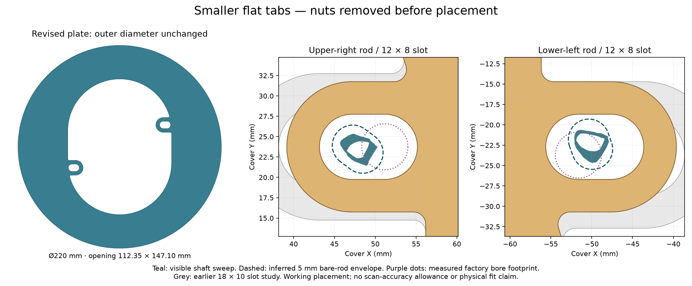
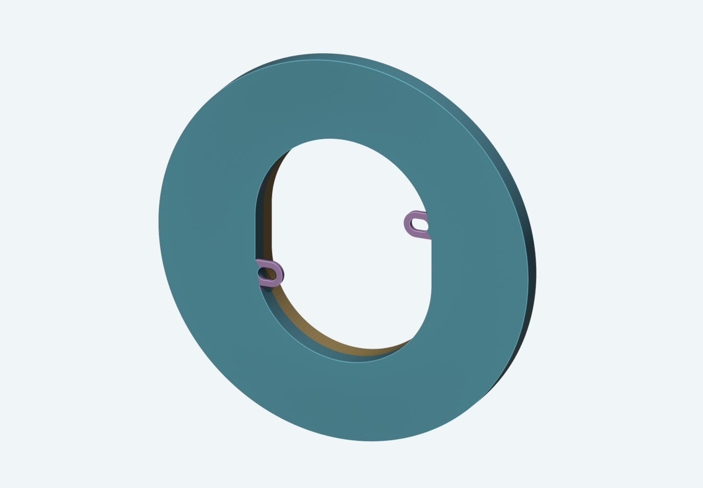
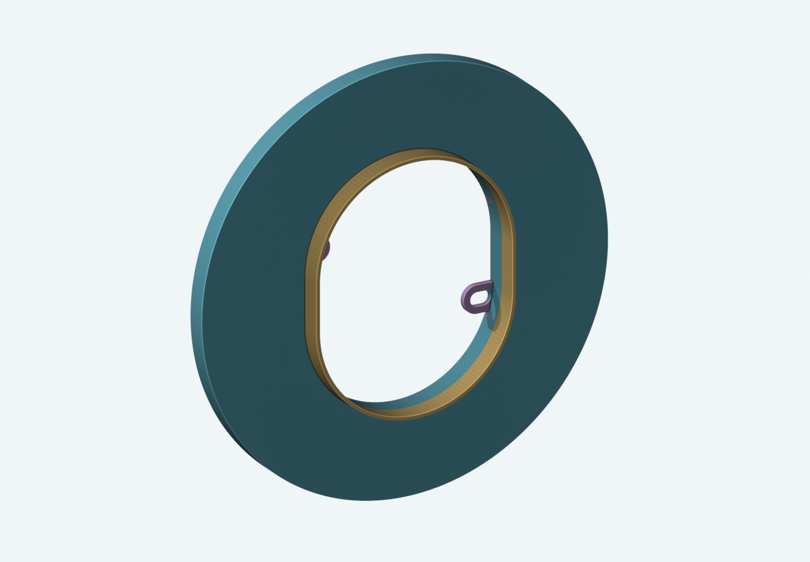
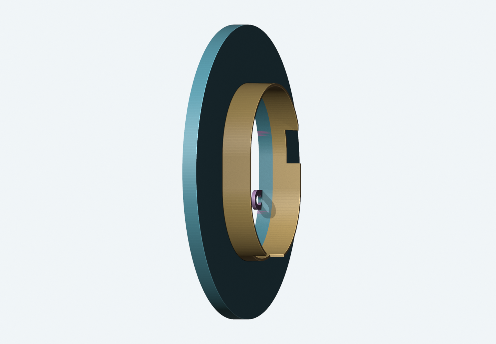

17 October 2026 · TR03 / RF02 · Design study, not released · FT02 purchase files unchanged
Smaller slots. Tabbed formwork.
A deeper option with clearance cutouts.
The end fitting is a removable nut, as you confirmed. The revised plate can therefore be tested over the bare rods with those nuts removed first. The proposed slots are 12 × 8 mm, reduced from 18 × 10 mm, in 16 mm-wide flat tabs.

The outer Ø220 circle stays the same. The aperture keeps the 2 mm of extra inward backing explored in TR02. Adding tabs does not move the foam.
Why these offsets?
Both slots sit 2 mm inward from the measured factory-hole centers. The lower-left slot also sits 1 mm higher to accommodate the captured rod path. These are deliberate design offsets for a new flat sheet at a different depth; your factory plate measurements remain unchanged.
The captured shafts fit within these slots. A separate inferred 5 mm rod envelope, extended through the region hidden by the nuts, also fits in the working placement. The narrowest model gap is about 0.6 mm. That is a geometric remainder, not a guaranteed tolerance for the real installation.
Keep the tabs flat
The design does not rely on bending them. First remove the nuts, trial the plate, visually center the cover/border, and establish supported retention. The slots are guides, not precision pins. Do not use bending or tightening to pull interfering hardware into alignment.
The nominal foam band stays supported, with about 2.8 mm of extra inward reserve in this model. Rear handle/hub shapes and actual engagement still need the ordinary assembly trial. The full knobs attach from the front.
Which scan agrees with the caliper?
The polycam without inner plate agrees more closely. Its differences are roughly 0.1–0.4 mm. The polycam with inner plate differs by roughly 0.5–1.9 mm, depending on the pair. All numbers below are three-dimensional tip-to-tip distances, in mm.
Both scan comparisons use the caliper’s 80 mm between control tips to set scale. Their matching 80 mm is an input, not an independent accuracy check. Visible end picks, reflective surfaces and different attached hardware remain limitations. The loose inner-plate calipers are coplanar and remain the stronger basis for its hole layout. No original scan was moved or rescaled by this study.
Both form options use integral 3 mm-thick locating tabs on the front side of the 12 mm-thick forming face. They use the same 12 × 8 mm slot layout. They help position the form; the independent padded brace carries the repair load. No tab or fastener is cast into the repair.

Shower-facing view: purple tabs locate the form on the bare rods.
Wall-facing view: 12 mm continuous collar. The rear view reverses screen left and right.Why not simply make it deeper?
The unchanged full collar overlaps captured surfaces when extended to 18 or 24 mm. The main conflicts are the lower valve body and a smaller region on the installed left. Increasing taper did not eliminate them. At 30 mm, conflicts spread considerably.
The separate 24 mm option keeps the front 12 mm continuous, then extends farther where the scan permits. Two rear clearance windows avoid the captured conflicts. This is 24 mm maximum reach, not a continuous 24 mm molding wall. Keep the original bounded front repair depth; do not fill through the windows or around service parts.
Temporary use remains the basis
I would begin with the 12 mm tabbed form. The 24 mm relieved option is available if extra reach is useful during the dry rehearsal. A deeper continuous collar has not been justified by this scan.
These tools are designed to be removed after the repair reaches appropriate stripping strength. Leaving a collar permanently behind the trim would need a separate retention, drainage and service-access design. The form does not establish a shower-water seal.
Full-face seating, stable support and free withdrawal still need a physical rehearsal. A clear collar path does not establish that the large front face sits flat on the travertine.

24 mm option, actual exported CAD. The short portions at the two rear windows remain 12 mm deep. This geometry is separate from the escutcheon and from the factory foam.
Study files and checks
One physical part per STEP/STL. Plate alternatives are 1.50 mm clear-stock geometry and 1.52 mm metal-stock geometry. The two form depths are alternatives. No vendor upload, order, physical fit or permanent-use approval has occurred.
- TR03_MAIN_220_T1500_SLOT12x8_STUDY_NOT_RELEASED
STEP · STL — one custom solid, mm. - TR03_MAIN_220_T1520_SLOT12x8_STUDY_NOT_RELEASED
STEP · STL — one custom solid, mm. - RF02_D12_TABBED_REMOVABLE_FORM_STUDY_NOT_RELEASED
STEP · STL — one custom solid, mm. - RF02_D24_RELIEVED_TABBED_REMOVABLE_FORM_STUDY_NOT_RELEASED
STEP · STL — one custom solid, mm.
Open the three-scene Blender study · Executed analysis and export checks · Handoff notes
Rod reference: Kohler 1038645, 10-24 × 4.56 inches. Nut removability is your physical observation. This does not establish handle depth or thread engagement.